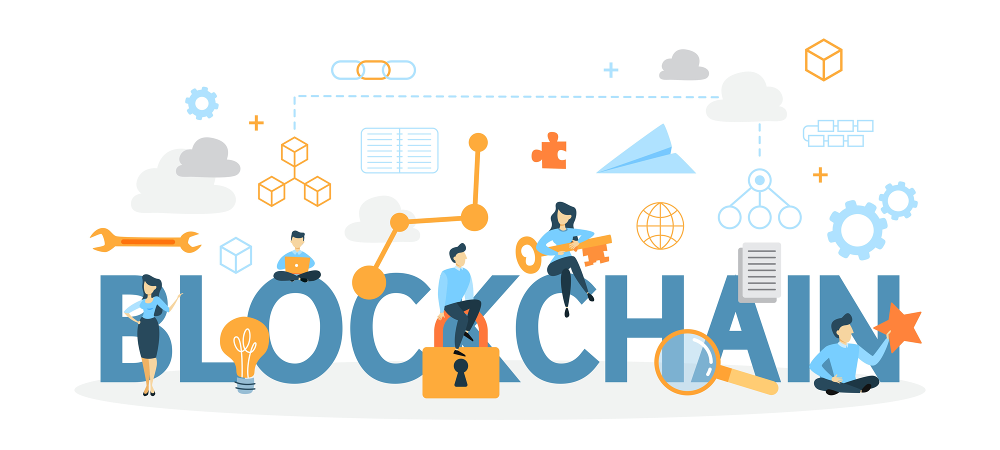
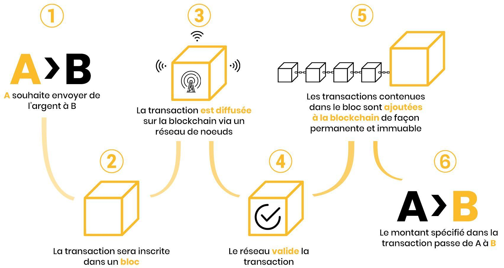
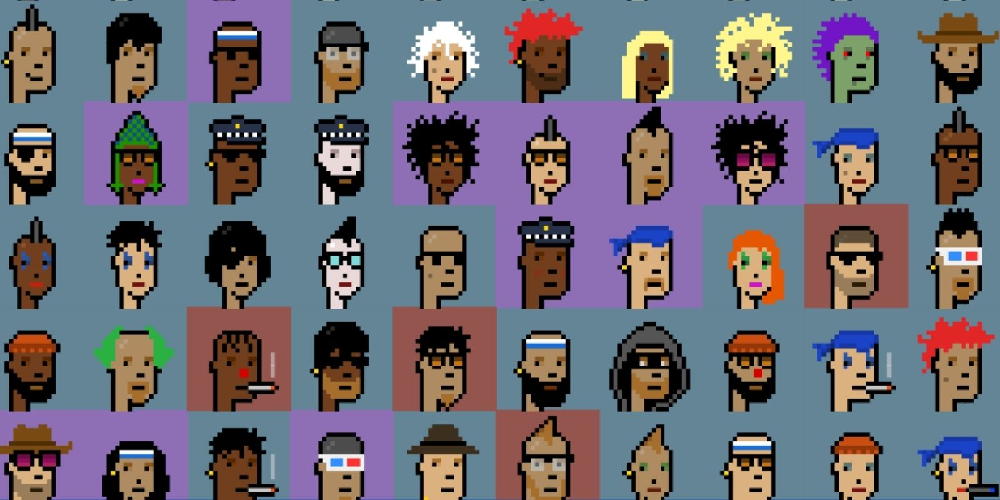

QU’EST-CE QUE LA CRYPTO ET LES NFT’s ?

Notre sujet tournant autour d’œuvre d’art et de leur évolution en NFT, il est impensable de passer a
coté du concept de blockchain et de cryptomonnaie.
Une blockchain est souvent représentée comme une base de données ouverte qui contient l’historique de tous les échange
effectuées entre les différents utilisateurs. Le terme de blockchain est plus qu’explicite puisqu’en
réalité, une blockchain est une chaîne de « block ».
Ces derniers étant des blocs de données chiffrés. Ils sont identifiés par un
numéro unique et contient un nombre donné d’adresse de transactions. Chaque transaction effectué sur le réseau d’une blockchain est identifié par une adresse. Cette adresse est unique est permet à tous
d’aller vérifier l’authenticité d’une transaction quelconque sur le
réseau de la blockchain.
Ces transactions sont vérifies via des procédés cryptographiques par différents utilisateurs appelés
mineurs, qui ne se connaissent pas. Ce procédé permet de garantir
l’authenticité d’une transaction tout en gardant un système
décentralisé. Contrairement a la banque, une blockchain n’a pas de centre d’opération ou
de serveur central.

MAIS ALORS POURQUOI LA BLOCKCHAIN PLUTOT QU'U SYSTEME CENTRALISE CLASSIQUE ?
Avec le gain de popularité des cryptomonnaies ces dernières années, de plus en plus d’organisme
et de particuliers s’intéresse a cette nouvelle technologie. La blockchain propose en effet de
nombreux avantages tel que l’anonymat, des gains de productivité ou encore des garanties de
sécurités.
-
Le monnaie propre a chacune des blockchain est distribué à des portefeuilles numériques qui
sont en théorie intraçable (jusqu’au moment ou vous rentrez votre carte bancaire et
l’adresse de votre portefeuille dans une application classique, une banque par exemple). On
peut alors effectuer des transactions intraçables tout en gardant la sécurité qu’offre la
blockchain.
-
Les gains de productivité et d’efficacité générés grâce au fait que la blockchain n’a pas
besoin de passer par des protocoles d’échange de biens classique (Frais financiers, frais de
contrôle ou de certification, recours à des intermédiaires qui se rémunèrent pour leur
service ; automatisation de certaines prestations, etc.).
Pour citer quelques noms de blockchain, on citeras le bitcoin, qui est LA cryptomonnaie que tout le
monde connais grâce à sa valeur exorbitante (64,657$ a l’heure de la rédaction de l’article) ou
encore grâce à certains tweets de personne influente. Cependant, la cryptomonnaie dont nous allons
parler aujourd’hui est l’éternelle seconde, l’ethereum. Connue sous le sigle $ETH, un ethereum vaut
4108$ (à l’heure de la rédaction de l’article). Cette blockchain nous intéresse particulièrement du
a son intégration des NFT et de sa popularité pour ses derniers. Pour les NFT, on citera aussi le
Solana ($SOL) en mention honorable.
LE PRINCIPE DE BLOCKCHAIN ETANT MAINTENANT ETABLIS, NOUS ALLONS POUVOIR PARLER DES NFT ET POURQUOI
ILS DEPENDENT DE CETTE BLOCKCHAIN.

Durant l’introduction a la blockchain on a vu qu’un block de cette dernière contient multiples
adresses. Ces adresses sont en effet relié à des transactions, mais peuvent aussi être relié a des
tokens. Tokens qui sont en réalité les NFT ou tout autre actif numérique. Ces œuvres d’art digitales
deviennes donc inviolable une fois que le token est vérifié puis stocké dans la blockchain. Le
principe de NFT est né.
Les NFTs ont donc besoin d’une blockchain pour être infalsifiable. Et alors que beaucoup trouve le
concept de NFT ridicule vu qu’il suffit en réalité d’un copier-coller pour avoir un vulgaire fichier
jpeg sur son disque dur, nombreux sont les artistes a directement déployer leurs œuvres sur la
blockchain et les vendre directement a l’aide de transaction de cryptomonnaie, la vraie œuvre étant
en fait le token stocké sur notre base de données infalsifiable.
Beaucoup d’idée se sont alors concrétisé grâce à la blockchain. Certains jeux utilise ce concept de
jeton pour vendre leurs contenus « in-game ». Par exemple, en 2015, l’apparition du projet Etheria
fait parler de lui à cause d’un, à l’époque, étrange système. Le projet proposait de céder des
parcelles de monde virtuel contre de l’ethereum. Ces parcelles étant stocké sur la blockchain, ce
projet est le premier à proposer cette utilité de la blockchain.